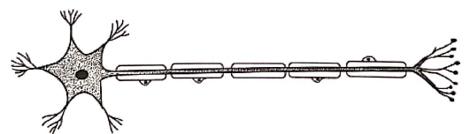
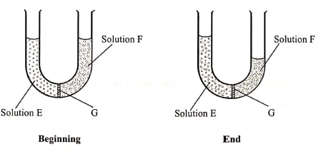
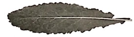
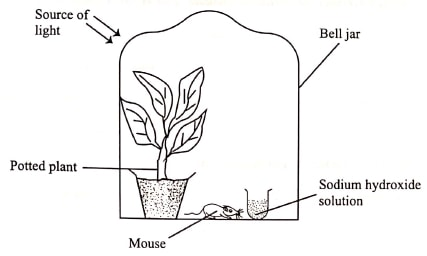
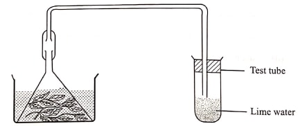
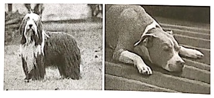
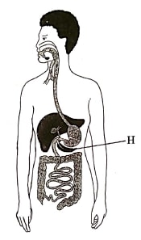
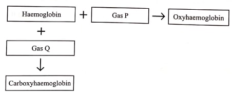

INSTRUCTIONS
Answer all the questions
- Name the characteristic of living organisms illustrated by each of the activities described
below:
- Dressing heavily (1 mark)
- Bursting of the sporangium in the Rhizopus sp (1 mark)
-
- Besides venation, state two other external characteristics of leaves that can be used to classify plants. (2 marks)
- Explain why the bat is classified as a mammal yet it flies. (2 marks)
- The diagram below illustrates a specialised cell obtained from a certain tissue.

- Name the cell. (1 mark)
- State two ways in which the cell is structurally adapted to its function. (2 marks)
- In investigating a certain physiological process, students set up the apparatus as shown
below and made the observations after 30 minutes as illustrated.

- Name the physiological process being investigated. (1 mark)
- Account for the observation made at the end of the experiment. (3 marks)
- State the likely identity of G. (1 mark)
- Explain why significantly increasing the blood pH slows down the rate of selective reabsorption of materials in the kidney tubules. (3 marks)
-
- Name the respiratory structure in the amoeba. (1 mark)
- Give a reason for your answer in (a) above. (1 mark)
- Distinguish between chemical and mechanical digestion. (1 mark)
- State the role of each of the following in the mammalian respiratory system:
- mucus (2 marks)
- cartilage rings (1 mark)
- epiglottis (1 mark)
- Below is a photograph of Brassica oleracea, Sukuma wiki leaf.

- State two observable features that adapt the leaf to gaseous exchange. (2 marks)
- Explain the relationship between photosynthesis and aerobic respiration within the leaf. (2 marks)
- In an investigation, students set up the apparatus below in the laboratory and made
observations after 72 hours.

- Explain how inclusion of the following components would affect the mouse in the
experiment:
- light (2 marks)
- sodium hydroxide solution (2 marks)
- State why the students preferred to use a bell jar and not a tin box in the experiment. (1 mark)
- Explain how inclusion of the following components would affect the mouse in the
experiment:
- Explain each of the following physiological observations:
- sportsmen release little, concentrated urine at the end of a strenuous exercise (3 marks)
- a rabbit has a higher oxygen demand than a camel (3 marks)
- While investigating a certain metabolic process in plants, students set up the apparatus as
shown below in a classroom and monitored it for 48 hours.

- Identify the metabolic process under investigation. (1 mark)
- Account for the observations made in the test tube at the end of the investigation. (2 marks)
- A female human being was found to have an extra sex chromosome in her cells.
- Give the total number of chromosomes in the female individual's cells. (1 mark)
- Explain the possible cause of this condition. (2 marks)
- State two physical characteristics observed in the female individual with such a condition. (2 marks)
-
- Explain why fossil records as evidence of organic evolution are usually incomplete. (3 marks)
- Name the evidence of organic evolution exhibited by occurrence of similar amino acid molecules in a range of organisms. (1 mark)
-
- Distinguish between guttation and transpiration. (1 mark)
- State the significance of transpiration to a plant. (2 marks)
- State two benefits of mutation in living organisms. (2 marks)
- Below are photographs of two dogs.

Explain the possible reason for the difference in the length of their fur. (2 marks) - Name the type of tooth in carnivores mainly used for piercing and killing of preys.
- Below is a diagram of the human digestive system.

- Label with Y on the diagram where enzyme amylase is produced. (2 marks)
- Besides the digestive role, explain one other function of the part labelled H. (2 marks)
- State how each of the following features enhance efficient movement of fish in water:
- Scale (1 mark)
- body shape (1 mark)
- Make a diagram of a simple, bilobed leaf with a serrated margin. (3 marks)
- The chart below illustrates how respiratory gases are transported in the human
blood.

- Identify gas Q. (1 mark)
- Explain the advantage oxyhaemoglobin has over carboxyhaemoglobin. (2 marks)
- State three homeostatic roles of the liver. (3 marks)
-
- Plasmodium vivax and Plasmodium ovale are transmitted by a mosquito. State with a reason whether the two organisms can interbreed. (2 marks)
- Explain the evolutionary basis for the ever changing drugs for malaria treatment. (2 marks)
- State one characteristic of muscles responsible for each of the following:
- peristaltic movement (1 mark)
- movement of limbs (1 mark)
Marking Scheme
- Name the characteristic of living organisms illustrated by each of the activities described
below:
- Dressing heavily (1 mark)
- Irritability/response to stimuli/stimuli/sensistivity
- Bursting of the sporangium in the Rhizopus sp (1 mark)
- Reproduction
- Dressing heavily (1 mark)
-
- Besides venation, state two other external
characteristics of leaves that can be used to classify plants. (2 marks)
- Shape of the leaf blade/lamina(broadness or narrowness)
- Leaf margin (Smooth, serated or lobed)
- leaf type(simpleor compound)
- Leaf sheath(petiole) (absence or presnce)
- Leaf apex (pointed or rounded)
- Leaf texture (smooth or rough)
- Leaf arrangement
- Leaf colour variation (any two)
- Explain why the bat is classified as a mammal yet it flies. (2 marks)
- Has mammary glands
- Body covered with fur/hair
- Gives birth/does not lay eggs
- Has external ears/pinnae
- Has sweat glands
- Has seven cervical vertebrae
- Heterodont(four types of teeth)
Acc presence of diaphragm
- Besides venation, state two other external
characteristics of leaves that can be used to classify plants. (2 marks)
- The diagram below illustrates a specialised cell obtained from a certain tissue.
- Name the cell. (1 mark)
- Nerve cell/motor neuron; acc Neuron
- State two ways in which the cell is structurally adapted
to its function. (2 marks)
- (Longer) axon to transmit impulses/action potentia a long way
- Has (numerous) dendrites for receiving/delivering/tramitting impulse
- Myelin sheath for faster transmission of impulse/insulation of axon
- Schwann cell for secretion of myelin sheath
- Node of ranvier to enhance speed of tranfer of impulse
- Cell body has nucleus for controlling nerve impulse transmission
- Name the cell. (1 mark)
- In investigating a certain physiological process, students set up the apparatus as shown
below and made the observations after 30 minutes as illustrated.
- Name the physiological process being investigated. (1 mark)
- Osmosis
- Account for the observation made at the end of the experiment. (3 marks)
- Solution E is hypotonic/had more solute molecules compared to solution F
- Solution F is hypertonic to solution E
- By osmosis water molecules move through the semi-permeable membrane G(from solution F to E)
- Hence decrease in volume of F/increased solution E.
- State the likely identity of G. (1 mark)
- Semi-permeable membrane/visking tubing/slice of a raw potato/pawpaw(any other permeable pant tissues); pig bladder/cellophan paper/dialysis membrane(not cell membrane)
- Name the physiological process being investigated. (1 mark)
- Explain why significantly increasing the blood pH slows down the rate of selective
reabsorption of materials in the kidney tubules. (3 marks)
- Selective reabsorption of material in the kidney tubules is energy dependent/requires energy;synthesised through the process of (cellular) respiration/action of respiartory enzymes;whose working(effectiveness) is affected by the change in pH/ are denatured at high pH; pH affects the working/permeability of the (kidney tubule cells) membrane
-
- Name the respiratory structure in the amoeba. (1 mark)
- Cell membrane/plasma membrane/plasmalemma
- Give a reason for your answer in (a) above. (1 mark)
- Has a large surface area to volume
ratio
NB: a and b are tied
- Has a large surface area to volume
ratio
- Name the respiratory structure in the amoeba. (1 mark)
- Distinguish between chemical and mechanical digestion. (1 mark)
- Chemical digestion entails the action on/breakdown of ingested food
materials(in the alimentary canal) by the action of digestive enzymes(and
converted into a form that can be easily absorbed or assimilated into the
body system) while mechanical digestion, refers to physical breakdwon of
(larger) food materials(into smaller form or pieces) which can subsequently
be acted upon by digestive enzymes
(The two must be correct to score) OWTTE
- Chemical digestion entails the action on/breakdown of ingested food
materials(in the alimentary canal) by the action of digestive enzymes(and
converted into a form that can be easily absorbed or assimilated into the
body system) while mechanical digestion, refers to physical breakdwon of
(larger) food materials(into smaller form or pieces) which can subsequently
be acted upon by digestive enzymes
- State the role of each of the following in the mammalian respiratory system:
- mucus (2 marks)
- Trap foreign particles(from the inhaled/incoming air);
- moisten the (incoming/inhaled) air (for efficient gaseous exchange)
- cartilage rings (1 mark)
- Keeps the wind pipe/trachea open/not to collapse(to allow for continous flow of air)
- epiglottis (1 mark)
- Acts as a valve/flap between the larynx and the oesophagus to
permit air to enter the air way to the lungs and food particles to
pass into the gut/oesophagus;
Acc. prevent food particles from entering the trachea/air passage during swallowing
- Acts as a valve/flap between the larynx and the oesophagus to
permit air to enter the air way to the lungs and food particles to
pass into the gut/oesophagus;
- mucus (2 marks)
- Below is a photograph of Brassica oleracea, Sukuma wiki leaf.
- State two observable features that adapt the leaf to
gaseous exchange. (2 marks)
- Broad leaf blade/lamina;that expose more stomata for gaseous
exchange/provides a large surface area for gaseous
exchange
NB: don't deny if gaseous exchange is ommitted acc. broad leaf alone
- Broad leaf blade/lamina;that expose more stomata for gaseous
exchange/provides a large surface area for gaseous
exchange
- Explain the relationship between photosynthesis and aerobic respiration within the
leaf. (2 marks)
- Photosynthesis (within the leaf in the presence of sunlight ) yield simple carbohydrates/glucose/sugars which form the main substrate during aerobic respiration (producing energy/ATP)
- During the process (of respiration) carbon(IV) oxide produced is in turn used as a raw material in photosynthesis
- During photosynthesis water is broken down yielding oxygen which is needed/used in (cellualar) (aerobic) respiartion
- State two observable features that adapt the leaf to
gaseous exchange. (2 marks)
- In an investigation, students set up the apparatus below in the laboratory and made
observations after 72 hours.
- Explain how inclusion of the following components would affect the mouse in the
experiment:
- light (2 marks)
- Light enables the potted pant to photosynthesize; producing oxygen which is inhaled by the mouse(sustaining it); the illuminated light can further affect/alter some physiological processes in the mouse as a result of constant, direct beam of light
- sodium hydroxide solution (2 marks)
- Absorbs carbon(IV) oxide (mainly exhaled by the mouse); while at the same time deny the plant the needed raw material(carbon(IV)oxide) to photosynthesize hence suffocating the mouse/limiting its survival/no oxygen
- light (2 marks)
- State why the students preferred to use a bell jar and not a tin box in the
experiment. (1 mark)
- bell jar is transparent, allows pentration of ight for the plant to photosynthesize; tin box is opaque hence does not allow photosynthensis/could easily heat up altering the temperature inside for the mouse/plant
- Explain how inclusion of the following components would affect the mouse in the
experiment:
- Explain each of the following physiological observations:
- sportsmen release little, concentrated urine at the end of a strenuous
exercise (3 marks)
- During/after the exercise, one sweats (profusely to cool the body/eliminate some nitrogenous waste) a lot of water is lost through this/one is dehydrated; (the little) water that is left in the body system is further (selectively) reabsorbed in the kidney tubules(resulting in less but concentrated urine) OWTTE
- a rabbit has a higher oxygen demand than a camel (3 marks)
- A rabbit has a larger surface area to volume ratio/smaller in size hence has a large surface area exposed for heat loss to the environment/lose heat faster/its more active than the camel; hence neeed more oxygen(aerobically) respire (to synthesize the needed energy to support its active lifestyle)
- sportsmen release little, concentrated urine at the end of a strenuous
exercise (3 marks)
- While investigating a certain metabolic process in plants, students set up the apparatus as
shown below in a classroom and monitored it for 48 hours.
- Identify the metabolic process under investigation. (1 mark)
- Respiration acc aerobic or anaerobic respiration
- Account for the observations made in the test tube at the end of the
investigation. (2 marks)
- lime water/calcium hyrdoxide solution in the test tube formed a white precipitate; plants respire producing carbon(IV oxide) (which forms a white precipitate with lime water) acc. white suspension for white precipitate (respire must be mentioned to score the second mark)
- Identify the metabolic process under investigation. (1 mark)
- A female human being was found to have an extra sex chromosome in her cells.
- Give the total number of chromosomes in the female individual's cells. (1 mark)
- 47
- Explain the possible cause of this condition. (2 marks)
- Non-disjunction/failure of homologous chromosomes to separate/segregate(in Anaphase I) or failure of sister chromatids to separate/segregate (in Anaphase II); resulting in an extra X-chromosome in a cell/having XXX instead of X OWTTE
- State two physical characteristics observed in the female
individual with such a condition. (2 marks)
- Infertile/ovary abnormalities
- taller than average female
- (More pronounced) signs to obesity
- flat feet
- Abnormaly curved(pinky fingers)
- Widely spaced eyes
- Abnormally shaped breast bone
- Give the total number of chromosomes in the female individual's cells. (1 mark)
-
- Explain why fossil records as evidence of organic evolution are usually
incomplete. (3 marks)
- Partial/entire decomposition of dead organisms/organic matter
- Some parts or entire dead organisms are eaten by scavengers
- Soft bodied organisms do not fossilize
- Destruction of parts due to natural disasters like earthquakes/earth movement or faulting or folding or volcanicity or mass movement
- Distortion of parts of an organism due to sedimentation or faulting or folding or volcanicity rej. decomposition or distruction of fossils acc. distortion of fossils by sedimentation
- Name the evidence of organic evolution exhibited by occurrence of similar amino acid
molecules in a range of organisms. (1 mark)
- Comparative physiology/biochemistry/cell biology; acc. serology/comparative serology
- Explain why fossil records as evidence of organic evolution are usually
incomplete. (3 marks)
-
- Distinguish between guttation and transpiration. (1 mark)
- guttation is the process by which plants loss excess water thrpugh their leaves in form of water droplets (through hydathodes on the leaves surface such pants are mostly found in water logged areas while during transpiartion water is lost in form of water vapour/moisture (through stomata in leaves or lenticels on plant stems)
- State the significance of transpiration to a plant. (2 marks)
- Enables the plant to get rid of excess water
- Creates a suction force/help in the uptake of water/mineral salts from the soil
- Maintain turgor in plants/turgidity in cells
- Cools the plant
- Distinguish between guttation and transpiration. (1 mark)
- State two benefits of mutation in living organisms. (2
marks)
- can bring about beneficial/advantageous traits/polyploidy in plants(give exact example to score)/resistance to diseases/high yields/early maturity/resistance to malaria in sickle celled traits in animals
- Increases heterozygosity(and size of gene pool)/increase variation
- Below are photographs of two dogs.
Explain the possible reason for the difference in the length of their fur. (2 marks)- geographical distribution; made the animals addapt to survive in the environment(cold/hot), with thosehaving thick fur being adapted to cold regions; acc. convere - animals with short fur to adapt to hot areas
- Genetic/being passed from parent to offspring/genetic inheritance/genes being passed from parents to offsprings
- Name the type of tooth in carnivores mainly used for piercing and killing of preys.
- canine acc canines
- Below is a diagram of the human digestive system.
- Label with Y on the diagram where enzyme amylase is produced. (2 marks)
- Besides the digestive role, explain one other function of
the part labelled H. (2 marks)
- Endocrine function/secretes(insulin/glucagon) hormones responsible for blood sugar regulation
- State how each of the following features enhance efficient movement of fish in water:
- Scale (1 mark)
- Taper towards the back/overlap/point backwards to provide a smooth surface for easier movement/ are slimy/covered with mucus for easier/smooth movement in water/reduce friction
- body shape (1 mark)
- Streamline bodyshape to reduce friction/pointed(stiff) head for easier penetration/passage in water
- Scale (1 mark)
- Make a diagram of a simple, bilobed leaf with a serrated margin. (3 marks)

- The chart below illustrates how respiratory gases are transported in the human blood.
- Identify gas Q. (1 mark)
- Carbon(II)oxide acc. CO (must be written correctly)
- Explain the advantage oxyhaemoglobin has over carboxyhaemoglobin. (2 marks)
- Oxyhaemoglobin is unstable/freely dissociates, releaing oxygen to the tissues/dissociate iving haemoglobin free to take up more gaseous molecules(hence constantly supplements the much needed oxygen to the respiring tissues); carboxyhaemoglobin is stable/binds itself/hold on the haemoglobin molecules/does not dissociate hence starving the tissues/cells of the oxygen leading to suffocation/death
- Identify gas Q. (1 mark)
- State three homeostatic roles of the liver. (3 marks)
- Thermoregulation
- Blood sugar regulation
- Protein/amino acid/fat regulation
-
- Plasmodium vivax and Plasmodium ovale are
transmitted by a mosquito. State with a reason whether the two organisms can
interbreed. (2 marks)
- They can interbreed because they belong to the same genus
- They cannot interbreed because they do not belong to the same species (the two to be related or else deny)
- Explain the evolutionary basis for the ever changing drugs for malaria
treatment. (2 marks)
- Malaria causing parasite with time become resistant to some malaria drugs; due to(graduay changing their genetics constitution) mutation; which with time result in the evolution and eventual perpetuation of the new strains of parasite hence neccesitating the discovery of a more effective drug to counter the new/emerging strains; OWTTE
- Plasmodium vivax and Plasmodium ovale are
transmitted by a mosquito. State with a reason whether the two organisms can
interbreed. (2 marks)
- State one characteristic of muscles responsible for each of the
following:
- peristaltic movement (1 mark)
- spindle shaped
- lack striations/not striated
- uninucleated/one nucleus (mark only the first)
- movement of limbs (1 mark)
- striated
- Numerous mitochondria
- Multinucleated/many nuclei
- cylindrical shaped
- peristaltic movement (1 mark)